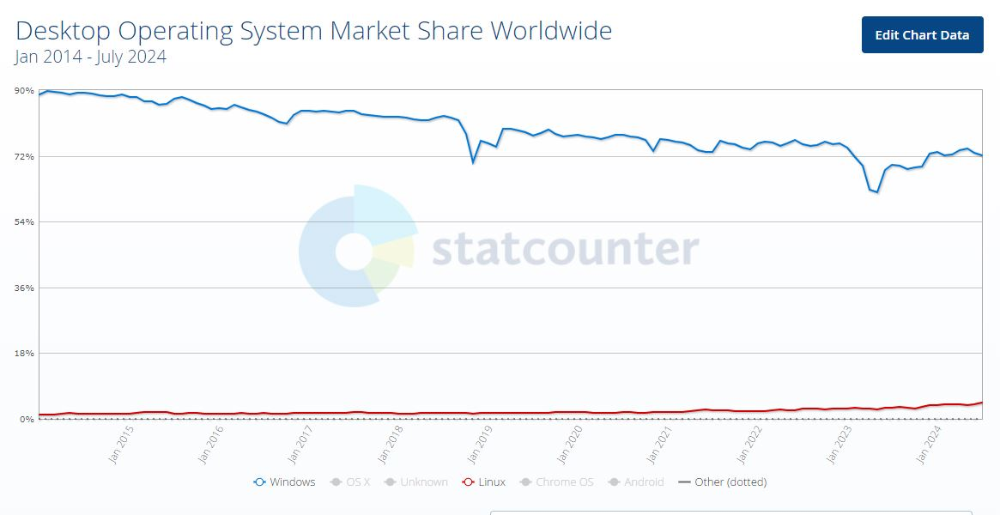

December 6, 2025
the future is closed-source, for-maximum-profit
People like being bullish on Microsoft.
The OS sucks(Windows), the software is proprietary, nothing is free, the developer experience
sucks, yada yada. People looooooooove Linux though.
What great developer experience!
Wow, I love that it's so open sourced.
Awesome, what a thriving community!
And its also free??
But wait a minute...

I know well, that Linux dominates on some platforms.
The question I find interesting is this:
Has Microsoft done more good for the global economy than UNIX?
Or a slightly different way to ask the same:
What is more scarce - talent or platform?
If platform is the scarce asset, yes, open source will thrive. Example, the
beginning of Unix and its variant. The first popular stream of OSes.
BSD/System V/Linux all gained traction, and it was healthy.
If talent is the scarce asset, open source does not thrive. Example, CUDA, Microsoft,
Oracle, etc. Most proprietary technologies are successors of open sourced technologies,
and explode in growth, once similar technology(mostly in some open-source license) prove
the place for such technology in the world. In this sense, proprietary technology is like
a Zombie that grows more when older technology stales. We have
experiments for this already, CUDA is prominent in AI. Microsoft is prominent in OS.
Proprietary platforms have the benefit of having the opportunity to generate more revenue.
And then they create interesting stuff with it. Open source technology usually does not
expand beyond its core. Another convenient consequence of proprietary technology is,
to bring a very technical diverse team of people working at different things together.
Nvidia presumably has AI research labs, encryption research labs, chips manifacturing
facilities, and probably a dozen more diverse related fields. Something like this
would simply be too infeasible for a non-profit open-sourced community.
Computation requirements are skyrocketing. AI generated videos, images, texts, are becoming
much more realistic. It is not hard to imagine, in the future, mobile phones and computers
become an endpoint for AI inference without anything else, like current OS, applications, etc.
This is a huge endeavor, and will require people of many scientific faiths to conglomerate
and build together. This will not be a non-profit open-source scenario.
The future entails lots of surprises. And let one of many surprises (not) be that the next AI
company will be proprietary and for-profit.
From a Linux user.